04. Cấu trúc máy tính và vi xử lý (CPU)
Mọi máy tính hàng không, từ đồng hồ buồng lái cho tới AIDS data recorder, đều dựa trên 3 khối cơ bản: CPU, bộ nhớ (RAM/ROM), và hệ thống bus kết nối. Module này trình bày cấu trúc máy tính, nguyên lý hoạt động của CPU, và các loại bộ nhớ bán dẫn dùng trong avionics.
CO/CLO: CO4, CO5, CLO3Thời lượng (ước tính): ≈ 7,6 giờ lý thuyết52 slideCâu hỏi: 88 (61 gốc)
Slide: Basic computer structure and microprocessor tr.1-52 · Tooley Ch.6-7 (tr.95-138) · Floyd Ch.11 Data Storage (tr.627-696) · Bản đồ nội dung sách
Tooley: Ch.6 Computers (p.95-115): computer systems, data storage, backplane bus + Ch.7 The CPU (p.116-138): internal architecture, x86/Pentium/AMD 29050
Floyd: Ch.11 Data Storage (p.627-696): RAM/ROM/Flash memory. Floyd KHÔNG có chương riêng về kiến trúc CPU/vi xử lý: đây là điểm khác biệt lớn nhất giữa 2 sách cho module này.
Đây là module có độ khớp THẤP NHẤT giữa 2 sách: Floyd là sách nền tảng logic số thuần tuý, không đi sâu kiến trúc máy tính/CPU như Tooley: phần CPU trong module này chủ yếu dựa vào Tooley.
- Cấu trúc cơ bản của một hệ thống máy tính
- Bộ nhớ bán dẫn
- Kiến trúc bên trong CPU
- Chu trình lệnh & thời gian thực thi
- Kiến trúc nâng cao & ứng dụng hàng không
📷 Slide gốc của giảng viên (bấm để phóng to)
52 slide
 cpu·1
cpu·1 cpu·2
cpu·2
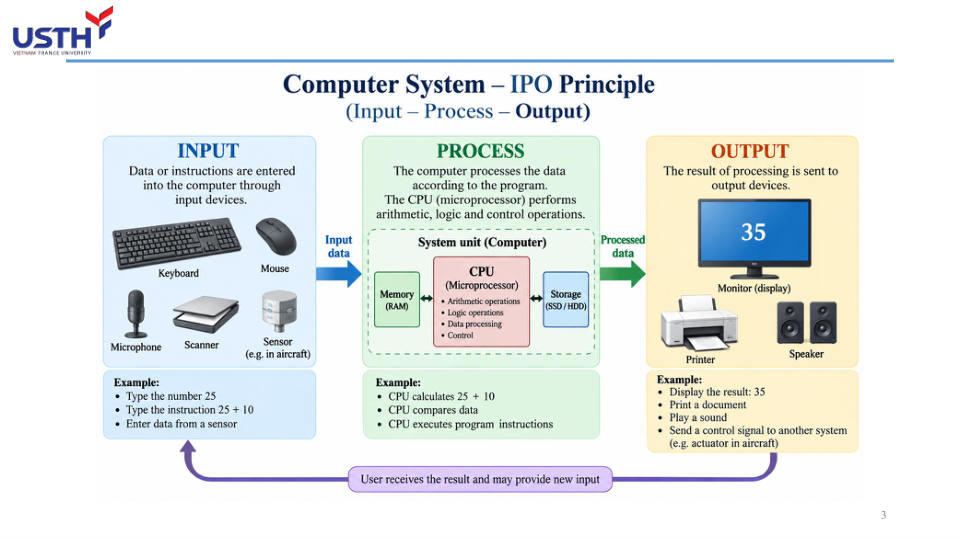
cpu·3 cpu·4
cpu·4 cpu·5
cpu·5
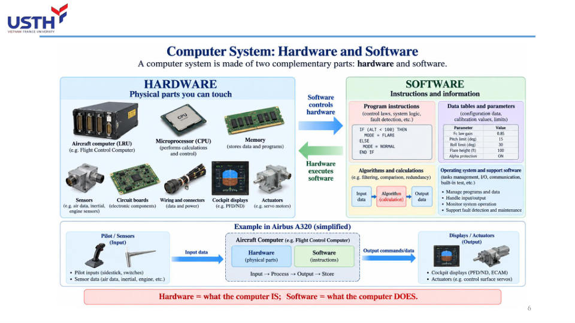
cpu·6 cpu·7
cpu·7
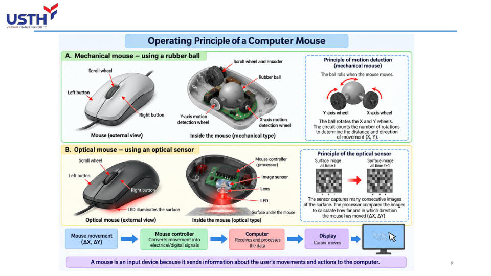
cpu·8
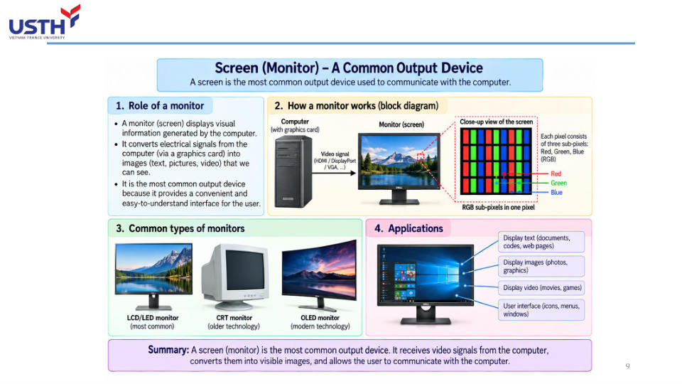
cpu·9 cpu·10
cpu·10 cpu·11
cpu·11
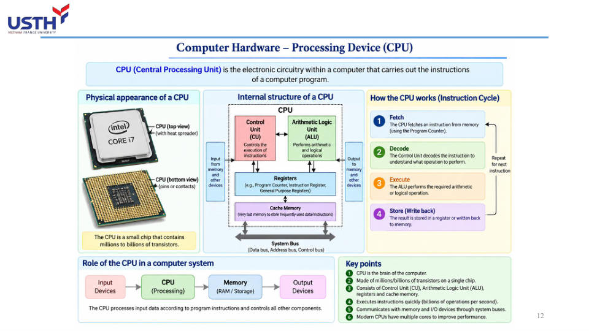
cpu·12 cpu·13
cpu·13 cpu·14
cpu·14
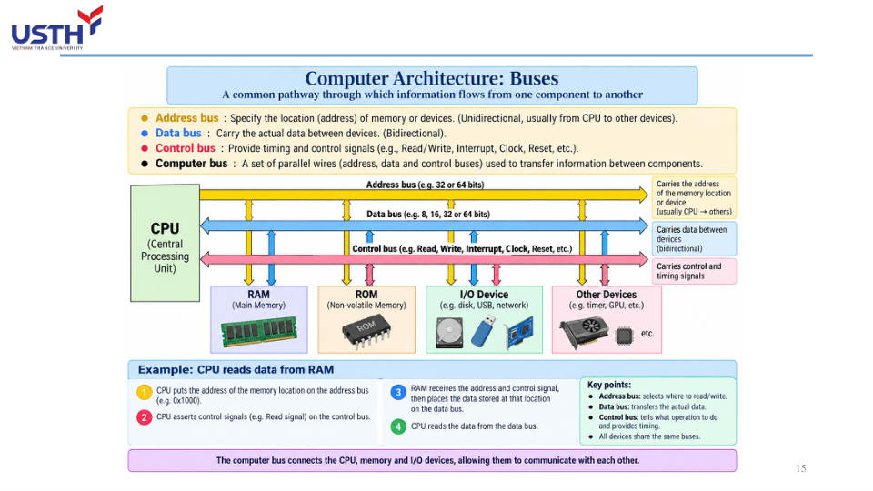
cpu·15 cpu·16
cpu·16 cpu·17
cpu·17 cpu·18
cpu·18 cpu·19
cpu·19
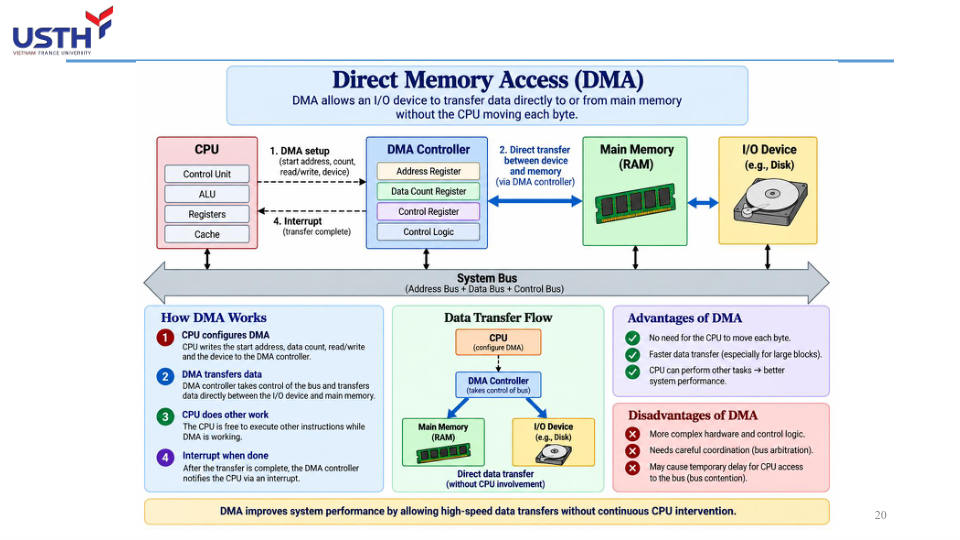
cpu·20 cpu·21
cpu·21 cpu·22
cpu·22 cpu·23
cpu·23 cpu·24
cpu·24 cpu·25
cpu·25 cpu·26
cpu·26 cpu·27
cpu·27 cpu·28
cpu·28 cpu·29
cpu·29 cpu·30
cpu·30
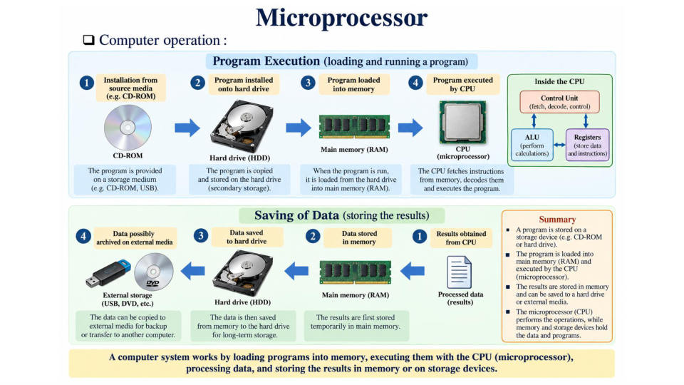
cpu·31 cpu·32
cpu·32 cpu·33
cpu·33 cpu·34
cpu·34
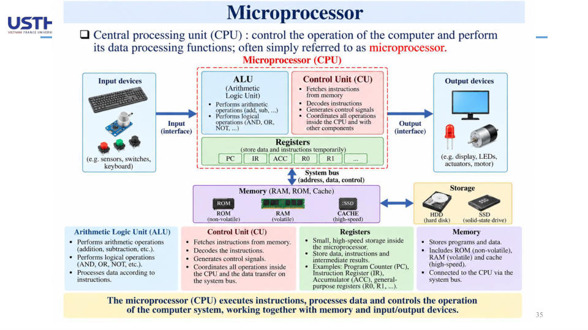
cpu·35 cpu·36
cpu·36 cpu·37
cpu·37 cpu·38
cpu·38 cpu·39
cpu·39
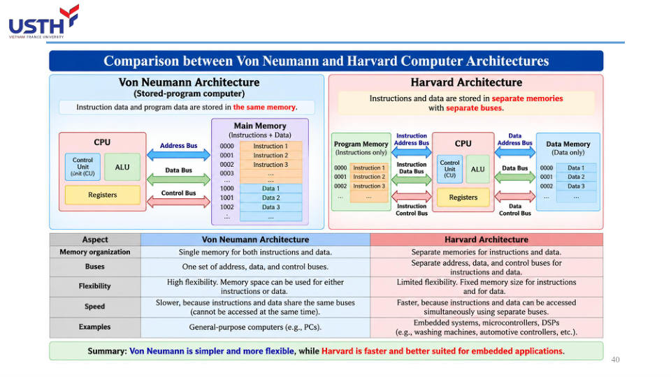
cpu·40 cpu·41
cpu·41 cpu·42
cpu·42 cpu·43
cpu·43 cpu·44
cpu·44 cpu·45
cpu·45 cpu·46
cpu·46 cpu·47
cpu·47
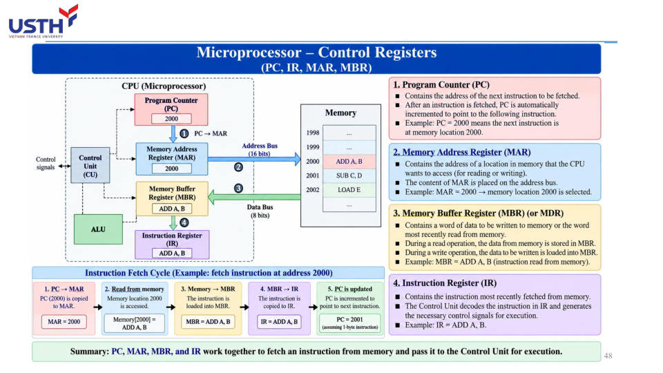
cpu·48 cpu·49
cpu·49 cpu·50
cpu·50 cpu·51
cpu·51 cpu·52
cpu·52Bài giảng
Cấu trúc cơ bản của một hệ thống máy tính
- Mô hình IPO: Input → Process → Output
- Ba loại bus: address, data, control
- Ví dụ: đồng hồ buồng lái (clock computer) và AIDS data recorder
Mô hình IPO: khung tư duy cho MỌI hệ thống máy tính
Input (nhập) → Process (xử lý) → Output (xuất) là khung tư duy áp dụng được cho mọi máy tính, từ máy tính bỏ túi tới FMGC. Trước khi phân tích một hệ thống mới, luôn xác định trước: đâu là input, đâu là process, đâu là output.
📖 Giải thích cho người mới bắt đầu
Mô hình IPO đơn giản tới mức dễ bị coi nhẹ, nhưng chính sự đơn giản đó là sức mạnh của nó: bất kể một hệ thống trông phức tạp tới đâu, bạn LUÔN có thể bóc tách nó thành đúng ba câu hỏi. Dữ liệu đi vào từ đâu (Input)? Nó được biến đổi ra sao (Process)? Kết quả cuối cùng là gì và đi tới đâu (Output)?
Với một máy tính bỏ túi, Input là các phím bấm, Process là phép tính, Output là con số hiện trên màn hình. Với FMGC, Input là hàng chục cảm biến, Process là hàng nghìn dòng lệnh điều khiển bay, Output là lệnh gửi tới bề mặt điều khiển. Cùng một khung tư duy, áp dụng cho cả hai thái cực về độ phức tạp.
Ba loại bus và vai trò riêng biệt
| Bus | Mang gì | Chiều truyền |
|---|---|---|
| Address bus | địa chỉ ô nhớ/thiết bị | 1 chiều (CPU→bộ nhớ) |
| Data bus | dữ liệu thực tế | 2 chiều |
| Control bus | tín hiệu điều khiển/định thời | 2 chiều |
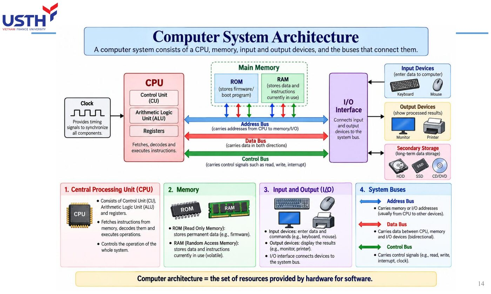
📖 Giải thích cho người mới bắt đầu
Ba loại bus giống như ba loại đường trong một thành phố phục vụ ba mục đích khác nhau: address bus giống bảng chỉ đường (chỉ cho biết ĐẾN ĐÂU, không chở hàng), data bus giống xe tải chở hàng thật (chở DỮ LIỆU thực sự), còn control bus giống hệ thống đèn giao thông (ra lệnh khi nào đi, khi nào dừng, đi hướng nào).
Điểm khác biệt quan trọng nhất cần nhớ: address bus chỉ truyền MỘT chiều (CPU luôn là bên phát địa chỉ, bộ nhớ/thiết bị luôn là bên nhận), trong khi data bus và control bus đều truyền HAI chiều, vì CPU vừa cần đọc vừa cần ghi dữ liệu, và cả tín hiệu điều khiển cũng cần phản hồi ngược lại từ thiết bị.
Ví dụ từng bước: địa chỉ lớn nhất trên bus 24-bit
Bus địa chỉ 24-bit → 2²⁴ = 16.777.216 địa chỉ khả dĩ, từ 0 tới 16.777.215. Đổi giá trị lớn nhất sang hex (6 chữ số hex vì 24÷4=6): FFFFFF. (Khớp Tooley Ch.6 Q5: đã kiểm chứng bằng notebook 04.)
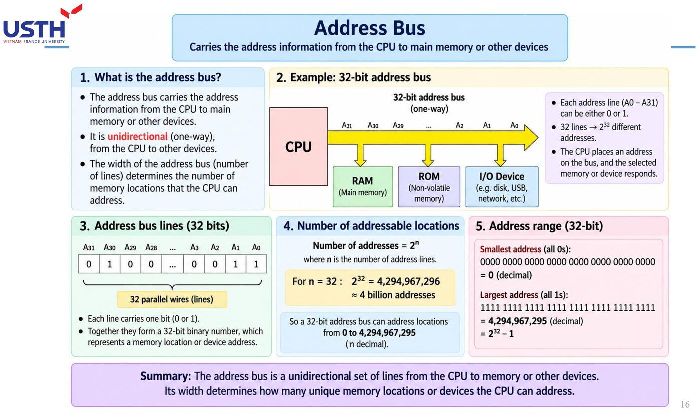
📖 Giải thích cho người mới bắt đầu
Công thức 2ⁿ (đã học từ Module 01 khi đếm tổ hợp nhị phân, và từ Module 03 khi đếm số đường ra decoder) giờ được áp dụng lại đúng nguyên lý đó: số đường dây địa chỉ (n) quyết định số ô nhớ tối đa có thể phân biệt (2ⁿ).
Với bus 24-bit, 2²⁴ cho ra 16.777.216 địa chỉ, và địa chỉ lớn nhất (toàn bit 1) khi đổi sang hex chỉ cần đúng 6 chữ số (vì 24 chia hết cho 4) là FFFFFF: đây chính là ví dụ thực hành trực tiếp của nguyên lý nhóm 4-bit cho hex đã học ở Module 01.
Case study: đồng hồ buồng lái A320 (Figure 6.11, Tooley)
Dao động thạch anh tạo xung UTC → vi xử lý xử lý dữ liệu thời gian → ROM lưu phần mềm điều khiển → RAM lưu dữ liệu tạm → bộ mã hoá dữ liệu nối tiếp gửi ra bus ARINC 429. Đây là ví dụ IPO + 3-bus hoàn chỉnh trong MỘT thiết bị thật.
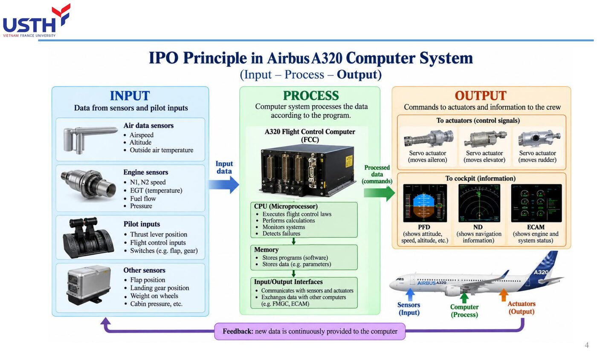
📖 Giải thích cho người mới bắt đầu
Đây là một ví dụ THẬT hoàn chỉnh, gói gọn toàn bộ khung IPO và cả ba loại bus vào đúng MỘT thiết bị cụ thể: đồng hồ buồng lái A320. Dao động thạch anh (nguồn thời gian, giống Input), vi xử lý xử lý dữ liệu (Process, dùng cả ba bus để giao tiếp với ROM/RAM), rồi xuất ra bus ARINC 429 (Output).
Hình đính kèm cho thấy một sơ đồ khối tương tự, với dữ liệu cảm biến/lệnh phi công đi vào, được xử lý bởi CPU cùng bộ nhớ, rồi xuất ra lệnh điều khiển bề mặt và thông tin hiển thị: đúng cấu trúc IPO + 3-bus đã học, áp dụng cho một hệ thống máy bay thực tế thay vì ví dụ trừu tượng.
⚠️ Bẫy: nhầm 'bus' là một sợi dây đơn
Mỗi 'bus' thực chất là một BÓ nhiều đường dây song song (vd address bus 24-bit = 24 đường dây riêng biệt truyền đồng thời), không phải một đường dây duy nhất. Số đường dây quyết định trực tiếp số bit truyền được đồng thời.
📖 Giải thích cho người mới bắt đầu
Đây là một hình ảnh trực quan sai lầm rất phổ biến khi mới học: nghĩ “bus” là một đường dây đơn, giống như một sợi cáp mạng. Thực tế hoàn toàn khác: một “bus” là một BÓ dây chạy song song, mỗi dây mang đúng một bit.
Bus địa chỉ 24-bit không phải “một đường truyền 24 lần”, mà là 24 ĐƯỜNG DÂY VẬT LÝ riêng biệt, mỗi đường mang đúng 1 bit của địa chỉ, cả 24 đường hoạt động ĐỒNG THỜI để truyền trọn vẹn một địa chỉ trong một nhịp. Số lượng dây vật lý này chính là con số quyết định “độ rộng bus” (bus width) nhắc tới trong tài liệu kỹ thuật.
Tự kiểm tra nhanh (không chấm điểm)
Nếu bus địa chỉ chỉ có 8 đường dây, tối đa định vị được bao nhiêu ô nhớ khác nhau? (Gợi ý: 2⁸). So sánh với kết quả 24-bit ở slide trên để thấy rõ vì sao mở rộng thêm vài bit làm tăng vọt số ô nhớ định vị được.
📖 Giải thích cho người mới bắt đầu
Bài tự luyện áp dụng ngược công thức 2ⁿ với n nhỏ hơn nhiều: bus 8-bit cho ra 2⁸=256 địa chỉ khả dĩ, ít hơn HẲN so với 16.777.216 địa chỉ của bus 24-bit ở slide trước.
Sự chênh lệch khổng lồ này (256 so với hơn 16 triệu, dù số bit chỉ tăng từ 8 lên 24, tức gấp 3 lần) minh hoạ rõ bản chất TĂNG THEO CẤP SỐ NHÂN của hàm luỹ thừa: mỗi bit thêm vào KHÔNG cộng thêm một lượng cố định vào số địa chỉ, mà NHÂN ĐÔI số địa chỉ hiện có. Đây là lý do các hệ thống hiện đại luôn cố gắng tăng độ rộng bus địa chỉ dù chỉ thêm vài bit, vì lợi ích tăng vọt không tuyến tính.
Bộ nhớ bán dẫn
- RAM (đọc/ghi) và ROM (chỉ đọc), EPROM, Flash
- Cấu trúc ma trận hàng-cột, CAS/RAS
- Backplane bus (vd VMEbus) cho hệ thống nhiều bo mạch
RAM vs ROM: khác biệt cốt lõi
| Tiêu chí | RAM | ROM |
|---|---|---|
| Ghi được? | Có (đọc/ghi) | Không (chỉ đọc, trừ EPROM/Flash) |
| Mất dữ liệu khi tắt điện? | Có (volatile) | Không (non-volatile) |
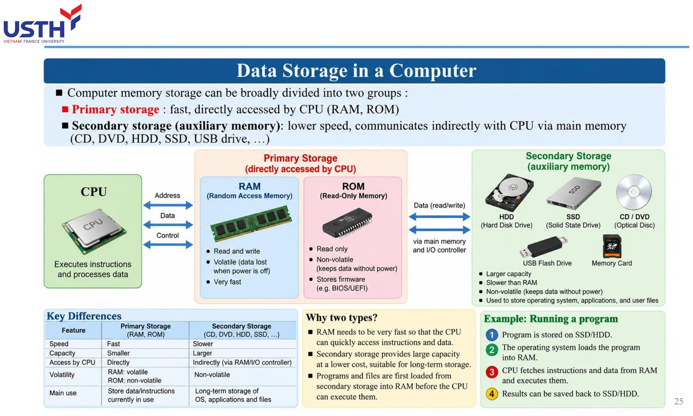
📖 Giải thích cho người mới bắt đầu
Hãy hình dung RAM như một tấm bảng trắng (viết xoá được thoải mái, nhưng xoá sạch khi tắt đèn phòng), còn ROM như một trang sách đã in sẵn (đọc được nhưng không viết đè lên được, và vẫn còn nguyên dù tắt đèn).
Hai tiêu chí phân biệt trong bảng chính là hai câu hỏi cốt lõi cần hỏi về bất kỳ loại bộ nhớ nào: nó có GHI được không (read/write hay chỉ read-only), và nó có GIỮ được dữ liệu khi mất điện không (volatile hay non-volatile). Hai tiêu chí này độc lập với nhau, và như slide sau sẽ cho thấy, có những loại bộ nhớ “lai” (như EEPROM/Flash) phá vỡ ranh giới đơn giản RAM/ROM truyền thống.
EPROM, OTP EPROM, Mask ROM: phân biệt 3 loại dễ nhầm
Mask ROM: ghi cố định từ khi sản xuất, không đổi được. OTP EPROM: ghi được đúng MỘT lần bởi người dùng. EPROM (UV-erasable): xoá bằng tia UV, ghi lại được NHIỀU lần: đây là loại duy nhất trong 3 loại 'xoá và lập trình lại được' (Tooley Ch.6 Q8).
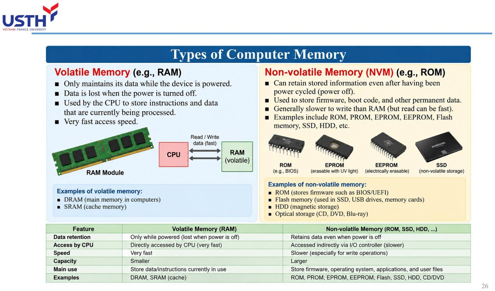
📖 Giải thích cho người mới bắt đầu
Ba loại ROM này khác nhau ở đúng MỘT điểm: AI được phép ghi, và ghi được BAO NHIÊU LẦN. Mask ROM: nhà sản xuất ghi cố định ngay từ khâu chế tạo, người dùng không bao giờ ghi được. OTP EPROM: người dùng ghi được, nhưng chỉ đúng MỘT lần duy nhất (giống như một tờ giấy chỉ viết được bằng bút không tẩy xoá được).
EPROM (loại xoá bằng tia UV) là loại “linh hoạt” nhất trong ba loại: người dùng có thể ghi, rồi dùng đèn UV chiếu qua một cửa sổ trong suốt trên vỏ chip để XOÁ SẠCH, rồi ghi lại từ đầu, lặp lại nhiều lần. Đây chính là điểm khiến EPROM khác hẳn hai loại còn lại và là loại duy nhất thực sự “tái lập trình được” trong nhóm ba loại này.
Ví dụ từng bước: cần bao nhiêu IC DRAM cho 32KB
Mỗi IC 16K×4-bit chứa 16.384×4 = 65.536 bit = 8KB. Cần 32KB ÷ 8KB = 4 IC. (Khớp Tooley Ch.6 Q13: đã verify bằng code trong notebook 04.)
📖 Giải thích cho người mới bắt đầu
Bài tính này là một bài toán “quy đổi đơn vị” điển hình, cần đi qua đúng ba bước không được bỏ sót bước nào. Bước 1: tính dung lượng MỘT IC bằng cách nhân số địa chỉ với số bit mỗi địa chỉ (16.384×4=65.536 bit). Bước 2: đổi từ bit sang byte (chia 8, ra 8.192 byte = 8KB, vì 1 byte=8 bit).
Bước 3: chia tổng dung lượng cần có (32KB) cho dung lượng một IC (8KB) để ra số IC cần dùng: 32÷8=4. Lỗi hay gặp nhất ở bài toán dạng này là quên đổi đơn vị bit sang byte ở bước 2, dẫn tới kết quả sai gấp 8 lần.
Cấu trúc ma trận hàng-cột và tín hiệu CAS/RAS
Bộ nhớ bán dẫn tổ chức theo lưới hàng×cột để giảm số chân địa chỉ cần thiết. RAS (Row Address Select) chốt địa chỉ hàng, CAS (Column Address Select) chốt địa chỉ cột: gửi 2 lần thay vì gửi toàn bộ địa chỉ cùng lúc, tiết kiệm chân IC.
📖 Giải thích cho người mới bắt đầu
Cấu trúc ma trận hàng-cột giải quyết một vấn đề thực tế rất tinh tế: nếu gửi toàn bộ địa chỉ cùng một lúc, một chip nhớ dung lượng lớn sẽ cần RẤT NHIỀU chân địa chỉ vật lý (ví dụ chip 1 triệu ô nhớ cần 20 chân địa chỉ nếu gửi 1 lần).
Giải pháp: tổ chức các ô nhớ thành lưới hàng×cột, rồi gửi địa chỉ hàng TRƯỚC (chốt bằng tín hiệu RAS), sau đó gửi địa chỉ cột SAU (chốt bằng tín hiệu CAS), dùng CHUNG một bộ chân địa chỉ cho cả hai lần gửi. Cùng một chip 1 triệu ô nhớ giờ chỉ cần khoảng 10 chân địa chỉ (thay vì 20), đổi lại việc đọc/ghi mất thêm một chút thời gian vì phải gửi địa chỉ thành 2 đợt thay vì 1.
⚠️ Bẫy: nhầm 'random access' với 'RAM' theo nghĩa thông thường
Về mặt kỹ thuật, ROM CŨNG là bộ nhớ 'truy cập ngẫu nhiên' (mọi ô nhớ truy xuất nhanh như nhau): chỉ là không ghi được. Thuật ngữ 'RAM' trong giao tiếp hàng ngày bị hiểu lệch thành 'bộ nhớ đọc/ghi', khác với định nghĩa kỹ thuật gốc của 'random access'.
📖 Giải thích cho người mới bắt đầu
Đây là một trong những trường hợp thuật ngữ kỹ thuật và cách dùng thông thường trong đời sống bị LỆCH NHAU, dễ gây hiểu nhầm nghiêm trọng nếu không phân biệt rõ. Về mặt kỹ thuật chặt chẽ, “random access” (truy cập ngẫu nhiên) chỉ có nghĩa là mọi ô nhớ được truy xuất nhanh như nhau, bất kể vị trí, KHÔNG liên quan gì tới việc có ghi được hay không.
Theo định nghĩa đó, ROM hoàn toàn xứng đáng được gọi là “random access” (đối lập với bộ nhớ truy cập tuần tự như băng từ, nơi phải “tua” qua từng vị trí). Nhưng trong giao tiếp hàng ngày, từ “RAM” đã bị hiểu lệch thành đồng nghĩa với “bộ nhớ ghi/đọc được”: đây là lý do bạn không bao giờ nghe ai gọi ROM là “một loại RAM” dù về mặt kỹ thuật ROM cũng random-access.
Tự kiểm tra nhanh (không chấm điểm)
Một hệ thống cần lưu phần mềm điều khiển KHÔNG được phép người dùng vô tình ghi đè: nên chọn RAM, ROM hay EPROM? Vì sao?
📖 Giải thích cho người mới bắt đầu
Bài tự luyện áp dụng đúng logic loại trừ dựa trên hai tiêu chí đã học: RAM bị loại ngay vì dữ liệu mất khi tắt điện (không phù hợp lưu phần mềm điều khiển cần tồn tại lâu dài) VÀ vì RAM ghi được (rủi ro bị ghi đè ngoài ý muốn, đúng điều đề bài cấm).
Giữa ROM và EPROM, cả hai đều không cho phép người dùng vô tình ghi đè trong quá trình vận hành bình thường (ROM không ghi được chút nào, EPROM chỉ ghi lại được qua một quy trình đặc biệt có chủ đích dùng tia UV, không thể xảy ra “vô tình”). Cả hai đều là lựa chọn hợp lý, tuỳ vào việc phần mềm có cần cập nhật định kỳ (chọn EPROM) hay hoàn toàn cố định vĩnh viễn (chọn Mask ROM rẻ hơn khi sản xuất số lượng lớn).
Kiến trúc bên trong CPU
- Accumulator, thanh ghi đa dụng, ALU
- Bộ đếm chương trình (PC) và con trỏ ngăn xếp (SP)
- Bus buffer và cách CPU giao tiếp với bus ngoài
Bốn khối chức năng chính bên trong CPU
- Thanh ghi (registers): lưu tạm địa chỉ/dữ liệu
- ALU (Arithmetic Logic Unit): thực hiện phép toán số học/logic
- Bộ giải mã lệnh (instruction decoder)
- Khối điều khiển/định thời (control & timing)
📖 Giải thích cho người mới bắt đầu
Hãy hình dung CPU như một văn phòng nhỏ với đúng bốn nhân viên chuyên trách. Thanh ghi là những ngăn kéo nhỏ trên bàn (chứa tài liệu đang xử lý ngay lúc này). ALU là nhân viên tính toán (thực hiện phép cộng/trừ/so sánh). Bộ giải mã lệnh là nhân viên tiếp nhận (đọc yêu cầu rồi xác định cần làm gì). Khối điều khiển là quản lý (điều phối cả ba nhân viên kia làm đúng việc, đúng lúc).
Bốn khối này không hoạt động độc lập: chúng phối hợp CHẶT CHẼ trong từng chu kỳ lệnh, và slide sau sẽ đi sâu vào từng thanh ghi cụ thể quan trọng nhất trong số đó.
Accumulator: thanh ghi được dùng nhiều nhất
Accumulator vừa là nguồn (chứa toán hạng đầu vào) vừa là đích (chứa kết quả) cho phần lớn phép toán của CPU: đây là lý do nó được nhắc tới nhiều hơn hẳn các thanh ghi khác trong tài liệu kỹ thuật CPU.

📖 Giải thích cho người mới bắt đầu
Accumulator xứng đáng được gọi tên riêng (thay vì chỉ là “một trong nhiều thanh ghi”) vì vai trò ĐẶC BIỆT của nó: hầu hết các lệnh số học/logic đều dùng accumulator làm cả điểm XUẤT PHÁT (chứa toán hạng đầu) lẫn điểm ĐÍCH (chứa kết quả sau khi tính).
Hãy tưởng tượng nó như một cái bát trộn duy nhất trên bàn bếp: bạn đổ nguyên liệu đầu vào bát, trộn (tính toán), rồi kết quả cũng nằm NGAY TRONG chính cái bát đó, sẵn sàng cho bước tiếp theo hoặc đổ ra ngoài. Đây là lý do accumulator xuất hiện dày đặc trong tài liệu kỹ thuật CPU hơn hẳn các thanh ghi khác.
Program Counter (PC) và Stack Pointer (SP)
PC luôn chứa địa chỉ của LỆNH KẾ TIẾP sẽ nạp: còn gọi là 'instruction pointer'. SP trỏ tới đỉnh hiện tại của ngăn xếp (stack), một vùng bộ nhớ RAM ngoài dùng lưu tạm địa chỉ trả về/giá trị thanh ghi khi gọi hàm hoặc xử lý ngắt.
📖 Giải thích cho người mới bắt đầu
PC (Program Counter) và SP (Stack Pointer) đều là những “con trỏ” (register chỉ lưu MỘT địa chỉ, không lưu dữ liệu thực), nhưng trỏ tới hai thứ hoàn toàn khác nhau. PC luôn trỏ tới lệnh KẾ TIẾP sẽ được nạp (giống một ngón tay đang chỉ vào dòng tiếp theo cần đọc trong một cuốn sách hướng dẫn).
SP trỏ tới đỉnh hiện tại của ngăn xếp (stack), một vùng RAM đặc biệt hoạt động theo nguyên tắc “vào sau ra trước” (giống chồng đĩa: chỉ có thể thêm/lấy đĩa từ trên đỉnh). Ngăn xếp được dùng để tạm lưu địa chỉ trở về khi gọi một hàm con, hoặc lưu trạng thái các thanh ghi khi xử lý một ngắt, để sau đó có thể khôi phục lại chính xác.
Bus buffer: vì sao data bus buffer phải là hai chiều
CPU vừa cần ĐỌC dữ liệu từ bộ nhớ (chiều vào) vừa cần GHI dữ liệu ra bộ nhớ (chiều ra) qua cùng một data bus: bus buffer nối CPU với data bus do đó bắt buộc phải hỗ trợ cả 2 chiều (bidirectional), khác với address bus chỉ cần 1 chiều.
📖 Giải thích cho người mới bắt đầu
Lý do data bus buffer bắt buộc phải hai chiều nằm ở chính bản chất công việc của CPU với bộ nhớ: CPU không chỉ ĐỌC lệnh và dữ liệu (chiều vào), mà còn phải GHI kết quả tính toán trở lại bộ nhớ (chiều ra), và cả hai việc này đều đi qua CHUNG một data bus vật lý.
So sánh với address bus: CPU CHỈ BAO GIỜ phát địa chỉ ra ngoài (không bao giờ “nhận” địa chỉ từ bộ nhớ gửi ngược lại), nên address bus buffer chỉ cần một chiều là đủ. Đây chính là lý do vì sao trong sơ đồ khối CPU, bus buffer nối với data bus luôn được vẽ với mũi tên hai đầu, còn bus buffer nối với address bus chỉ có mũi tên một đầu.
⚠️ Bẫy: nhầm ALU với bộ giải mã lệnh
ALU thực hiện PHÉP TOÁN (cộng, trừ, AND, OR, đảo bit...) trên dữ liệu; bộ giải mã lệnh chỉ XÁC ĐỊNH lệnh vừa nạp là lệnh gì để điều khiển đúng khối chức năng: hai khối hoàn toàn khác nhiệm vụ dù đều nằm sát nhau trong sơ đồ CPU.
📖 Giải thích cho người mới bắt đầu
Đây là một cặp khối chức năng rất dễ gộp lẫn vì chúng luôn “làm việc sát cạnh nhau” trong mọi chu kỳ lệnh, nhưng nhiệm vụ lại hoàn toàn tách biệt. ALU giống như “đôi tay” của CPU: nó THỰC SỰ thực hiện phép tính (cộng, trừ, AND, OR...) trên dữ liệu cụ thể.
Bộ giải mã lệnh giống như “đôi mắt và bộ não phiên dịch”: nó không tính toán gì cả, chỉ NHÌN vào mã lệnh vừa nạp và XÁC ĐỊNH đó là lệnh gì (cộng? so sánh? nhảy?), rồi ra tín hiệu cho ALU (hoặc khối khác) biết PHẢI làm gì. Nếu bộ giải mã lệnh “đọc nhầm” một lệnh, ALU sẽ thực hiện đúng thao tác nhưng lại là thao tác SAI, minh chứng rõ hai khối này độc lập về chức năng dù luôn đi cùng nhau.
Tự kiểm tra nhanh (không chấm điểm)
Một byte dữ liệu cần đảo bit (NOT): khối nào trong CPU thực hiện việc này: accumulator, ALU, hay instruction register?
📖 Giải thích cho người mới bắt đầu
Bài tự luyện yêu cầu áp dụng đúng phân biệt vừa học ở slide trước: đảo bit (NOT) là một PHÉP TOÁN LOGIC thực sự thực hiện trên dữ liệu, nên khối chịu trách nhiệm chắc chắn là ALU, không phải accumulator (chỉ là nơi CHỨA dữ liệu, không tự tính toán) và cũng không phải instruction register (chỉ lưu mã lệnh, không xử lý dữ liệu).
Quy trình đầy đủ: dữ liệu cần đảo bit thường được nạp vào accumulator trước, ALU đọc dữ liệu đó, thực hiện phép NOT, rồi ghi kết quả TRỞ LẠI accumulator: ba khối (accumulator, ALU) phối hợp, nhưng phép tính THỰC SỰ chỉ do một khối duy nhất (ALU) đảm nhiệm.
Chu trình lệnh & thời gian thực thi
- Chu trình fetch - decode - execute
- T-state, chu kỳ máy (machine cycle M0/M1/M2…)
- Tính thời gian thực thi lệnh từ tần số xung nhịp
Chu trình Fetch - Decode - Execute
Fetch: CPU đọc mã lệnh từ ô nhớ được PC trỏ tới. Decode: bộ giải mã xác định lệnh là gì. Execute: ALU/khối chức năng liên quan thực hiện lệnh. Chu trình này lặp lại liên tục cho tới khi gặp lệnh HALT.

📖 Giải thích cho người mới bắt đầu
Chu trình Fetch-Decode-Execute là “nhịp tim” của mọi CPU, lặp đi lặp lại hàng tỉ lần mỗi giây mà không bao giờ dừng (trừ khi gặp lệnh HALT). Hãy hình dung nó như việc đọc một cuốn công thức nấu ăn từng dòng một: Fetch là “đọc dòng tiếp theo” (lấy đúng lệnh mà PC đang trỏ tới), Decode là “hiểu dòng đó bảo làm gì” (ví dụ “thêm 2 thìa đường”), Execute là “thực sự làm theo” (đổ đường vào).
Điều quan trọng cần nắm: đây không phải ba bước làm MỘT LẦN rồi dừng, mà là một VÒNG LẶP vô hạn, mỗi vòng xử lý đúng một lệnh, rồi tự động quay lại Fetch cho lệnh kế tiếp, cứ thế tiếp diễn.
T-state và chu kỳ máy (machine cycle)
Một T-state = đúng 1 chu kỳ xung nhịp (clock). Một lệnh thường cần NHIỀU T-state, gộp thành các chu kỳ máy M0, M1, M2...: theo Tooley, M1 là chu kỳ nạp và giải mã lệnh (opcode fetch).
📖 Giải thích cho người mới bắt đầu
Phân biệt T-state và chu kỳ máy giống như phân biệt “một nhịp đồng hồ” với “một công đoạn công việc”: một T-state chỉ là MỘT tích tắc đơn lẻ của đồng hồ hệ thống (không làm được việc gì trọn vẹn), còn một chu kỳ máy (M0, M1...) là một NHÓM các T-state gộp lại để hoàn thành một công đoạn có ý nghĩa (ví dụ M1 là toàn bộ công đoạn nạp và giải mã một lệnh).
Ví von: T-state giống như từng bước chân riêng lẻ, còn chu kỳ máy giống như “đi từ phòng này sang phòng kia”, một hành động trọn vẹn cần GHÉP nhiều bước chân lại mới hoàn thành.
Ví dụ từng bước: thời gian thực thi ở 50MHz, 11 T-state
Chu kỳ xung nhịp T = 1/50.000.000 = 20ns. Thời gian thực thi = 11 × 20ns = 220ns. (Khớp Tooley Ch.7 Q15: đã verify bằng code trong notebook 04.)
📖 Giải thích cho người mới bắt đầu
Bài tính này áp dụng công thức vật lý cơ bản nhất về thời gian và tần số: chu kỳ (T) luôn là NGHỊCH ĐẢO của tần số (f), vì tần số đo “bao nhiêu lần mỗi giây” còn chu kỳ đo “mỗi lần mất bao lâu”.
Với xung nhịp 50MHz (50 triệu lần mỗi giây), một chu kỳ đơn lẻ chỉ kéo dài 1/50.000.000 giây = 20 nano giây (ns, tức một phần tỉ giây). Nếu một lệnh cần 11 T-state để hoàn thành, tổng thời gian thực thi đơn giản là 11 nhân với thời gian một T-state: 11×20ns=220ns, nhanh hơn một cái chớp mắt hàng triệu lần.
Ví dụ: theo dõi thanh ghi AL sau lệnh MOV AX, 07FEh
AX (16-bit) gồm AH (byte cao) và AL (byte thấp). 07FEh tách thành AH=07h, AL=FEh. Đổi FEh sang nhị phân: 11111110. (Khớp Tooley Ch.7 Q18.)
📖 Giải thích cho người mới bắt đầu
Bài tập tách thanh ghi AX thành hai nửa AH/AL là ví dụ cụ thể cho thấy một thanh ghi “lớn” (16-bit) thực chất có thể được truy cập như hai thanh ghi “nhỏ” (8-bit mỗi nửa) độc lập, một kỹ thuật rất phổ biến trong kiến trúc x86.
Với giá trị hex 07FEh, việc tách thành AH=07h (byte cao, 8 bit đầu) và AL=FEh (byte thấp, 8 bit sau) chỉ đơn giản là “cắt đôi” chuỗi hex 4 chữ số thành hai cặp 2 chữ số. Đổi FEh sang nhị phân dùng đúng bảng tra hex-binary đã học ở Module 01 (F=1111, E=1110), ghép lại được 11111110.
⚠️ Bẫy: quên rằng 1 lệnh có thể cần NHIỀU chu kỳ máy khác nhau
Không phải mọi lệnh đều tốn cùng số T-state: một lệnh truy cập bộ nhớ (đọc/ghi RAM) luôn cần nhiều T-state hơn một lệnh chỉ thao tác trong thanh ghi nội bộ CPU, vì phải chờ thêm thời gian truyền tín hiệu qua address/data bus ra ngoài.
📖 Giải thích cho người mới bắt đầu
Đây là một điều rất dễ bị bỏ qua khi mới học chu kỳ máy: ngầm giả định TẤT CẢ lệnh đều tốn số T-state giống hệt nhau, trong khi thực tế hoàn toàn không phải vậy.
Nguyên nhân sâu xa: một lệnh chỉ thao tác NỘI BỘ trong CPU (ví dụ cộng hai thanh ghi với nhau) có thể hoàn thành ngay trong vài T-state vì mọi dữ liệu đều đã sẵn có bên trong chip. Nhưng một lệnh cần TRUY CẬP BỘ NHỚ NGOÀI (đọc/ghi RAM) phải chờ thêm thời gian để tín hiệu truyền qua address bus ra ngoài, chờ bộ nhớ phản hồi, rồi truyền dữ liệu ngược lại qua data bus: mỗi bước này đều tốn thêm T-state, khiến lệnh truy cập bộ nhớ LUÔN chậm hơn lệnh chỉ dùng thanh ghi nội bộ.
Tự kiểm tra nhanh (không chấm điểm)
Ở xung nhịp 20MHz, một lệnh cần 4 T-state mất bao lâu để thực thi? (Gợi ý: T=1/20MHz=50ns). Đối chiếu với notebook 04 sau khi tự tính.
📖 Giải thích cho người mới bắt đầu
Bài tự luyện áp dụng đúng công thức đã học ở slide tính toán 50MHz: trước tiên tính chu kỳ T=1/20.000.000=50ns (chú ý đơn vị MHz nghĩa là triệu Hz, không phải nghìn), sau đó nhân với số T-state cần thiết: 4×50ns=200ns.
So sánh với ví dụ 50MHz/11 T-state ở slide trước (220ns): dù tần số THẤP HƠN (20MHz so với 50MHz, mỗi T-state chậm hơn), nhưng vì số T-state cần thiết cũng ÍT HƠN (4 so với 11), tổng thời gian thực thi lại NHANH HƠN một chút. Đây là ví dụ cho thấy thời gian thực thi phụ thuộc vào CẢ HAI yếu tố (tần số và số T-state), không chỉ riêng một yếu tố nào.
Kiến trúc nâng cao & ứng dụng hàng không
- Pipelining, kiến trúc ba bus
- Ngắt (interrupt) qua đường IRQ
- Ví dụ: Boeing 777 AIMS dùng 2 vi xử lý giống hệt cho hệ thống avionics tới hạn
Pipelining: chồng lấn các giai đoạn xử lý lệnh
Thay vì fetch-decode-execute TUẦN TỰ từng lệnh một, pipelining cho phép CPU fetch lệnh kế tiếp trong khi đang decode lệnh hiện tại, và decode lệnh đó trong khi đang execute lệnh trước nữa: tăng thông lượng thực thi tổng thể (Tooley Ch.7 Q19).
📖 Giải thích cho người mới bắt đầu
Pipelining là một trong những ý tưởng cải tiến hiệu năng khôn ngoan nhất trong kiến trúc CPU, và cách dễ hình dung nhất là so sánh với một dây chuyền giặt là: thay vì một người giặt ĐẦY ĐỦ một mẻ đồ (giặt xong mới phơi, phơi xong mới gấp) rồi mới bắt đầu mẻ tiếp theo, ba người làm ba công đoạn khác nhau CÙNG LÚC trên ba mẻ đồ khác nhau: người 1 đang giặt mẻ 3, người 2 đang phơi mẻ 2, người 3 đang gấp mẻ 1, tất cả diễn ra đồng thời.
Áp dụng vào CPU: trong khi lệnh A đang được Execute, lệnh B (đến sau) đã có thể được Decode, và lệnh C (đến sau nữa) đã có thể được Fetch, tất cả CÙNG một lúc thay vì phải đợi lệnh A xong hoàn toàn rồi mới bắt đầu lệnh B.
Kiến trúc ba bus: tách riêng bus lệnh và bus dữ liệu
Một số vi xử lý hiệu năng cao dùng bus địa chỉ riêng, bus dữ liệu hệ thống riêng, và bộ nhớ lệnh (instruction ROM) tách biệt khỏi bộ nhớ dữ liệu: cho phép CPU đọc lệnh mới VÀ đọc/ghi dữ liệu CÙNG LÚC, không phải chờ nhau trên một bus chung duy nhất.
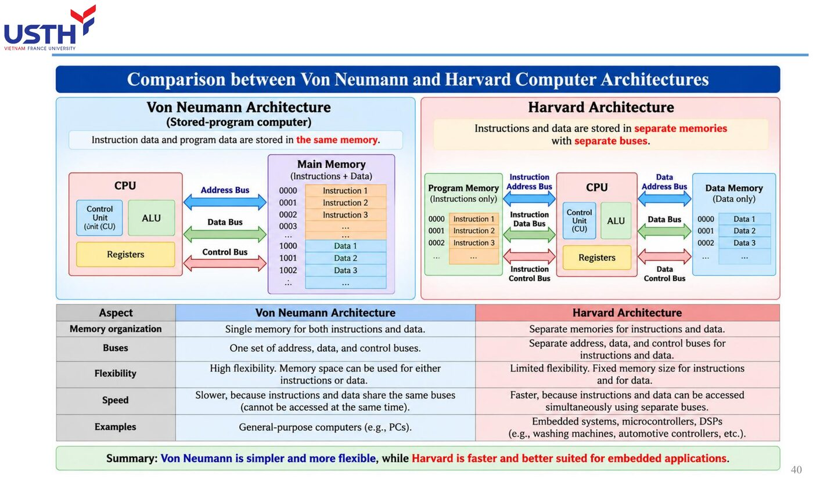
📖 Giải thích cho người mới bắt đầu
Kiến trúc tách riêng bus lệnh và bus dữ liệu (được minh hoạ trong hình bằng kiến trúc Harvard, đối lập với kiến trúc Von Neumann dùng chung một bộ nhớ và một bus cho cả lệnh lẫn dữ liệu) giải quyết một điểm nghẽn cổ điển: nếu chỉ có MỘT bus dùng chung, CPU không thể vừa lấy lệnh mới vừa đọc/ghi dữ liệu trong cùng một nhịp, vì cả hai việc đều phải “xếp hàng” chờ dùng chung đường truyền.
Với hai bus tách biệt (một cho bộ nhớ lệnh, một cho bộ nhớ dữ liệu), CPU có thể làm CẢ HAI việc CÙNG LÚC: vừa lấy lệnh tiếp theo, vừa đọc hoặc ghi dữ liệu của lệnh hiện tại, không ai phải chờ ai. Đây chính là lý do các bộ vi điều khiển nhúng (embedded) hiệu năng cao thường chọn kiến trúc Harvard thay vì Von Neumann đơn giản hơn.
Ngắt (interrupt) qua đường IRQ
Một thiết bị ngoại vi cần CPU xử lý ngay (vd cảm biến phát hiện lỗi khẩn) sẽ tạo tín hiệu trên đường IRQ (Interrupt Request) thay vì chờ CPU tự hỏi thăm định kỳ (polling): CPU tạm dừng chương trình đang chạy, lưu trạng thái vào stack, xử lý ngắt, rồi khôi phục lại.
📖 Giải thích cho người mới bắt đầu
Ngắt (interrupt) giải quyết một vấn đề rất thực tế: nếu CPU phải liên tục “hỏi thăm” từng thiết bị ngoại vi xem có sự kiện gì mới không (gọi là polling, giống việc cứ vài giây lại ngó ra cửa xem có khách tới chưa), sẽ rất lãng phí thời gian xử lý cho những lần hỏi thăm “không có gì mới”.
Với cơ chế ngắt, thiết bị ngoại vi TỰ CHỦ ĐỘNG “gõ cửa” (tạo tín hiệu trên đường IRQ) đúng khi có sự kiện cần xử lý, còn CPU có thể tập trung làm việc khác cho tới khi thực sự có tiếng gõ cửa. Khi ngắt xảy ra, CPU tạm dừng công việc đang làm, lưu lại TOÀN BỘ trạng thái hiện tại vào stack (đúng khái niệm stack đã học ở Phần 3), xử lý xong sự kiện khẩn cấp, rồi khôi phục lại đúng trạng thái cũ để tiếp tục công việc dở dang như chưa hề bị gián đoạn.
Case study: Boeing 777 AIMS dùng 2 vi xử lý giống hệt nhau
Hệ thống AIMS (Airplane Information Management System) trên Boeing 777 dùng hai vi xử lý giống hệt nhau chạy song song, liên tục so sánh kết quả: nếu kết quả hai bên khác nhau, hệ thống phát hiện lỗi ngay lập tức. Đây là ứng dụng thực tế của kiến trúc CPU dự phòng (redundancy) cho hệ thống avionics tới hạn.
📖 Giải thích cho người mới bắt đầu
Hệ thống AIMS trên Boeing 777 là một ví dụ kinh điển về triết lý thiết kế an toàn “không tin tưởng một điểm lỗi duy nhất” (no single point of failure): thay vì tin tưởng hoàn toàn vào MỘT vi xử lý (dù nó có mạnh tới đâu), hệ thống chạy HAI vi xử lý giống hệt nhau song song, cùng nhận dữ liệu đầu vào giống hệt nhau, cùng chạy chương trình giống hệt nhau.
Nếu cả hai cho ra kết quả GIỐNG NHAU, hệ thống tin tưởng kết quả đó là đúng. Nếu kết quả KHÁC NHAU, đó là bằng chứng chắc chắn có LỖI xảy ra ở một trong hai vi xử lý (do hỏng phần cứng, nhiễu, hoặc lỗi phần mềm hiếm gặp), và hệ thống có thể phát hiện ngay lập tức thay vì âm thầm đưa ra một kết quả sai mà không ai biết.
⚠️ Bẫy: nghĩ rằng pipelining luôn làm lệnh chạy nhanh hơn TỪNG LỆNH riêng lẻ
Pipelining tăng THÔNG LƯỢNG tổng thể (nhiều lệnh hoàn thành hơn trong cùng thời gian), nhưng thời gian hoàn thành của MỘT lệnh đơn lẻ (latency) không nhất thiết giảm: thậm chí có thể tăng nhẹ do chi phí quản lý pipeline. Đừng nhầm 'nhanh hơn' ở cấp độ hệ thống với 'nhanh hơn' ở cấp độ từng lệnh.
📖 Giải thích cho người mới bắt đầu
Đây là một trong những hiểu nhầm phổ biến nhất về pipelining: nghĩ rằng nếu CPU xử lý “chồng lấn” nhiều lệnh cùng lúc, thì MỖI lệnh đơn lẻ cũng phải hoàn thành nhanh hơn. Thực tế hoàn toàn khác.
Pipelining cải thiện THÔNG LƯỢNG (throughput: tổng số lệnh hoàn thành trong một khoảng thời gian dài), giống như dây chuyền giặt là xử lý được nhiều mẻ đồ hơn trong một giờ. Nhưng THỜI GIAN để một mẻ đồ CỤ THỂ đi từ lúc bắt đầu giặt tới lúc gấp xong xuôi (latency, độ trễ của MỘT lệnh đơn lẻ) không hề rút ngắn, thậm chí có thể dài hơn một chút do phải “chờ tới lượt” trong dây chuyền. Đừng nhầm “nhanh hơn ở quy mô hệ thống” với “nhanh hơn ở quy mô từng lệnh riêng lẻ”.
Tự kiểm tra tổng kết module (không chấm điểm)
Vì sao hệ thống avionics tới hạn (critical) thường KHÔNG dùng một vi xử lý đơn lẻ dù nó đủ mạnh về hiệu năng? Liên hệ lại với case study AIMS ở trên trước khi làm quiz cuối trang.
📖 Giải thích cho người mới bắt đầu
Câu hỏi tổng kết này buộc bạn liên kết lại TOÀN BỘ triết lý thiết kế đã học trong Phần 5: một vi xử lý dù mạnh tới đâu vẫn có thể hỏng bất ngờ (lỗi phần cứng ngẫu nhiên, nhiễu bức xạ vũ trụ ở độ cao lớn, lỗi phần mềm hiếm khi xảy ra), và khi hỏng, nó KHÔNG TỰ BÁO cho hệ thống biết nó đang sai.
Đó là lý do các hệ thống avionics tới hạn (critical, tức lỗi có thể gây hậu quả nghiêm trọng tới an toàn bay) không bao giờ đặt cược hoàn toàn vào MỘT điểm lỗi duy nhất, dù điểm đó có hiệu năng tốt tới đâu. Giải pháp luôn là REDUNDANCY (dự phòng): chạy nhiều bộ xử lý song song và so sánh chéo kết quả, đúng như case study AIMS đã học, để một lỗi đơn lẻ không bao giờ có thể âm thầm trở thành một quyết định sai lầm ảnh hưởng tới cả chuyến bay.
Thời gian thực thi lệnh theo T-state
- n_Tsố T-state mà lệnh cần
- f_clktần số xung nhịp CPU (Hz)
- tthời gian thực thi lệnh
📜 Bối cảnh lý thuyết & lịch sử
Vi xử lý thương mại đầu tiên, Intel 4004 (1971), chỉ có 2.300 transistor và xử lý 4-bit dữ liệu. Kiến trúc CPU với accumulator, thanh ghi đa dụng và ALU trình bày trong chương này của Tooley phản ánh trực tiếp dòng vi xử lý Intel x86 phát triển từ 8086 (1978): kiến trúc mà nhiều hệ thống máy tính hàng không thế hệ trước dựa vào, trước khi chuyển sang các vi xử lý chuyên dụng cho hàng không như AMD 29050 (dùng trong ASIC của Honeywell).
🔎 Case study thực tế: đồng hồ buồng lái Airbus (clock computer)
Đồng hồ buồng lái điện tử trên A320 (Figure 6.11, Tooley) là một máy tính hoàn chỉnh thu nhỏ: dao động thạch anh tạo xung UTC chính xác, vi xử lý xử lý dữ liệu thời gian, ROM lưu phần mềm điều khiển, RAM lưu dữ liệu tạm thời, và bộ mã hoá dữ liệu nối tiếp gửi thời gian ra bus ARINC 429 cho các hệ thống khác sử dụng: minh hoạ đầy đủ mô hình IPO + 3 bus trong một ứng dụng thực.
⚠️ Bẫy hay gặp
Nhầm lẫn giữa 'bộ nhớ truy cập ngẫu nhiên' (random access, nghĩa kỹ thuật là mọi ô nhớ truy xuất nhanh như nhau) với RAM (read/write memory) theo cách dùng thông thường. Về mặt kỹ thuật, ROM CŨNG là bộ nhớ truy cập ngẫu nhiên (không phải tuần tự như băng từ), dù không thể ghi được.
Tự kiểm tra nhanh (10 câu, ưu tiên câu gốc)
Luyện sâu
Mở ngân hàng câu hỏi của module (88 + 20)
Notebook Jupyter
Tải notebook (đã chạy sẵn, có đầu ra thật):
- 04_computer-cpu.ipynb (VI+EN)
Lỗi và nghi vấn của nguồn
Chưa ghi nhận lỗi nào cho module này.